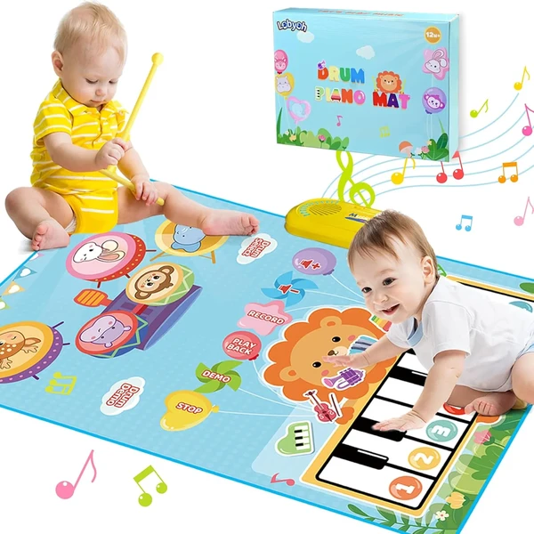

👶 1 año
Lobyoh Alfombra Musical 2 en 1
Una alfombra de juego con piano y batería integrados, con teclas de animales y varios modos de sonido. Su tamaño permite que dos o tres niños jueguen juntos golpeando las teclas con los palillos incluidos.
⭐
¿Por qué nos gusta?
- ✔Combina piano y batería en un mismo juguete.
- ✔Pensada para que jueguen varios niños a la vez.
- ✔Se pliega para guardar o llevar de viaje.
💬
Lo que más destacan las familias
Las familias destacan que aguanta bien el uso de los más pequeños y que los distintos modos de sonido mantienen el interés durante más tiempo. También se valora que sea fácil de guardar al plegarse.